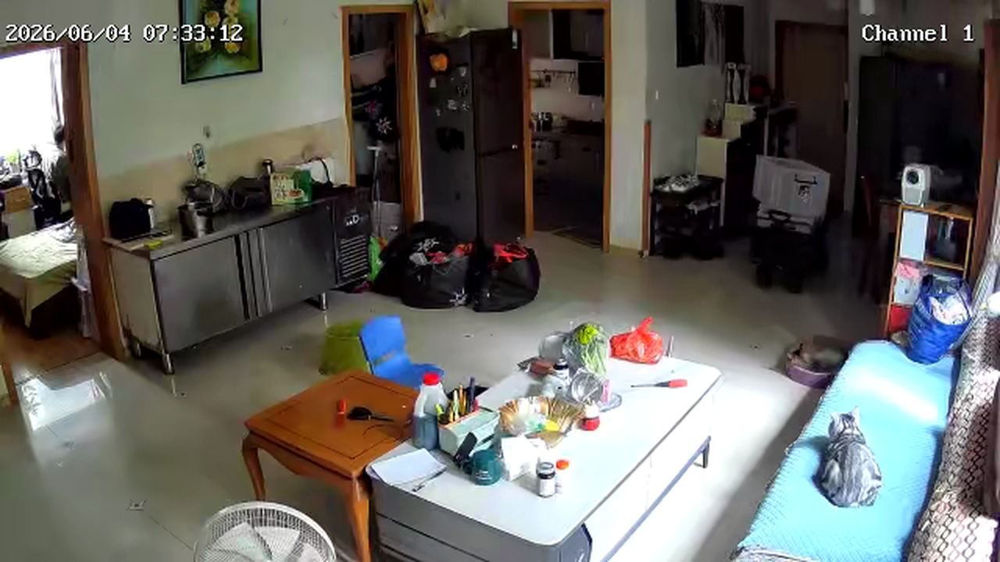
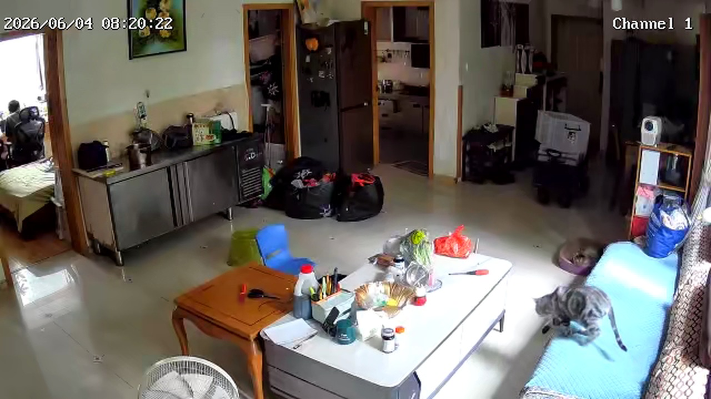

CAT
00:00
待整理等待该时段整理
这一小时的巡视结果还没写入，后续由 cron 构建时补齐。
Cat Daily
单日详情页
2026.06.04
00:00
待整理这一小时的巡视结果还没写入，后续由 cron 构建时补齐。
01:00
待整理这一小时的巡视结果还没写入，后续由 cron 构建时补齐。
02:00
待整理这一小时的巡视结果还没写入，后续由 cron 构建时补齐。
03:00
待整理这一小时的巡视结果还没写入，后续由 cron 构建时补齐。
04:00
待整理这一小时的巡视结果还没写入，后续由 cron 构建时补齐。
05:00
待整理这一小时的巡视结果还没写入，后续由 cron 构建时补齐。
06:00
待整理这一小时的巡视结果还没写入，后续由 cron 构建时补齐。

07:00
待整理这一小时的巡视结果还没写入，后续由 cron 构建时补齐。

08:00
客厅这一小时有 2 个摄像头成功抓拍，但本地 YOLO / 视觉分析没有给出足够稳定的宠物确认结果。先保留原始画面，后续进入人工确认和训练样本队列。
09:00
待整理这一小时的巡视结果还没写入，后续由 cron 构建时补齐。
10:00
待整理这一小时的巡视结果还没写入，后续由 cron 构建时补齐。
11:00
待整理这一小时的巡视结果还没写入，后续由 cron 构建时补齐。
12:00
待整理这一小时的巡视结果还没写入，后续由 cron 构建时补齐。
13:00
待整理这一小时的巡视结果还没写入，后续由 cron 构建时补齐。
14:00
待整理这一小时的巡视结果还没写入，后续由 cron 构建时补齐。
15:00
待整理这一小时的巡视结果还没写入，后续由 cron 构建时补齐。
16:00
待整理这一小时的巡视结果还没写入，后续由 cron 构建时补齐。
17:00
待整理这一小时的巡视结果还没写入，后续由 cron 构建时补齐。
18:00
待整理这一小时的巡视结果还没写入，后续由 cron 构建时补齐。
19:00
待整理这一小时的巡视结果还没写入，后续由 cron 构建时补齐。
20:00
待整理这一小时的巡视结果还没写入，后续由 cron 构建时补齐。
21:00
待整理这一小时的巡视结果还没写入，后续由 cron 构建时补齐。
22:00
待整理这一小时的巡视结果还没写入，后续由 cron 构建时补齐。
23:00
待整理这一小时的巡视结果还没写入，后续由 cron 构建时补齐。